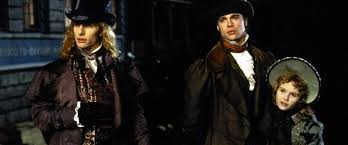

São Francisco, anos 1990. Um jornalista entrevista um jovem que afirma ser vampiro, narrando suas experiências dos últimos 200 anos. Em flash-back, conhecemos Louis de Pointe du Lac (Brad Pitt), um homem que perdeu a mulher, morta durante o parto, e a vontade de viver. Com a ajuda de uma criatura da noite, Lestat de Lioncourt (Tom Cruise), ele se torna um vampiro e precisa aprender uma nova forma de vida.
